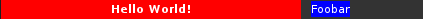

The declarative layout system
This system provide an alternative to the system used in Awesome 3.5 and is inspired by the one once used by Awesome 3.2-3.4 and Qt QML system.
A simple layout
- Display
my_first_widgetonly on screen one - Add a background color to
my_third_widget - Dispose in a wibox.layout.fixed.horizontal layout
Code:
mywibox[s] : setup {
s == 1 and my_first_widget, -- Only display on screen 1
my_second_widget,
{ -- Add a background color/pattern for my_third_widget
my_third_widget,
bg = beautiful.bg_focus,
widget = wibox.widget.background,
},
layout = wibox.layout.fixed.horizontal,
}
In this example s == 1 is an inline expression. In the default rc.lua,
there is an s variable represent to define the current screen. Any lua
logic expression can be used as long as it return a valid widget, or a
declarative layout, or nil.
Define widgets inline and place them
- Create a wibox.widget.textbox with various properties
- Force the textbox size using wibox.layout.constraint
- Add a margin around another textbox
- Add a wibox.widget.background (for visualization)
Code:
mywibox[s] : setup {
{
-- Force the textbox to always be 300 pixel long
{
{
markup = "<b>Hello World!</b>",
align = "center",
widget = wibox.widget.textbox
},
bg = "#ff0000",
widget = wibox.widget.background,
},
width = 300,
strategy = "min",
layout = wibox.layout.constraint
},
{
-- Add a border around the background
{
{
markup = "Foobar",
widget = wibox.widget.textbox
},
bg = "#0000ff",
widget = wibox.widget.background
},
left = 10,
right = 10,
top = 1,
bottom = 2,
layout = wibox.layout.margin
},
layout = wibox.layout.fixed.horizontal,
}
Result: 
Use an wibox.layout.align layout
The wibox.layout.align is a little different. While most layouts will
ignore any nil lines, the align layout rely on them so left, middle
and right can be defined
Code:
mywibox[s] : setup {
my_textbox1, -- Left
nil, -- Nothing in the middle
my_textbox2, -- Right
layout = wibox.layout.fixed.horizontal,
}
Define new widgets
New trivial widgets can be created directly in the layout declaration. Here is a simple circle widget:
Code:
mywibox[s] : setup {
fit = function(self, context, width, height)
return height, height -- A square taking the full height
end,
draw = function(self, context, cr, width, height)
cr:set_source_rgb(1, 0, 0) -- Red
cr:arc(height/2, height/2, height/2, 0, math.pi*2)
cr:fill()
end,
layout = wibox.widget.base.make_widget,
}
Result:

For more information about how to draw widgets, refer to the Cairo api:
Externally defined widgets and layouts
This is useful when the widget is provided by an external module or when it requires complex manipulations which would make the declaration unreadable.
Code:
local tb = wibox.widget.textbox() tb:set_markup("Hello world! ") -- Repeat "tb" 3 times mywibox[s] : setup { tb, tb, tb, layout = wibox.layout.fixed.horizontal, }
Accessing widgets
For each widget or container, it is possible to add an identifier attribute
so the widget can be accessed later.
Widgets defined using setup can be access by 3 means:
- Avoid the issue by using externally created widgets
- Use
my_wibox.my_first_widget.my_second_widgetstyle access - Use JavaScript like
my_wibox:get_children_by_id("my_second_widget")[1]
The first method mixes the imperative and declarative syntax, but makes the code less readable. The second is a little verbose and only works if every node in the chain have a valid identifier. The last one doesn’t require long paths, but it is not easy to get a specific instance if multiple widgets have the same identifier.
WARNING: The widget identifier must not use reseved name. This include all
method names, existing widget attributes, layout and widget. Names should
also respect the lua variable name policies (case sensitive, alphanumeric and
underscore characters and non-numeric first character)
Code:
mywibox[s] : setup {
{
id = "second",
widget = wibox.widget.textbox
},
{
id = "third",
widget = wibox.widget.textbox
},
id = "first",
layout = wibox.layout.fixed.horizontal,
}
mywibox[s].first.second:set_markup("changed!")
mywibox[s]:get_children_by_id("third")[1]:set_markup("Also changed!")
Extending the system
This system is very flexible. Each section attribute (the entries with string
keys) is directly linked to the layout or widget API. When setting the
imaginary myproperty, it will first check if set_myproperty exist. If it
doesn’t, it will check if there is a myproperty method. Finally, it will
just set the mywidget.myproperty directly in case it is used later or
catched by a lua metatable (operator overload).
Code:
-- "Monkeypatch" a new function to wibox.widget.textbox to add vicious -- extension support function wibox.widget.textbox:vicious(args) local f = unpack or table.unpack -- Lua 5.1 compat vicious.register(w, f(args)) end mywibox[s] : setup { { vicious = {vicious.widgets.cpu, "CPU: $1%", 3}, widget = wibox.widget.textbox }, layout = wibox.layout.fixed.horizontal, }
In this example, the system is extended to that the popular Vicious extension module can be used directly in the layout declaration. This example will update the textbox every 3 seconds to show the CPU usage.
Handling sections
The system allows sections to be defined externally, then composed into the final layout declaration. Here is an example re-using one of the above example:
Code:
local circle = { fit = function(self, context, width, height) return height, height -- A square taking the full height end, draw = function(self, context, cr, width, height) cr:set_source_rgb(1, 0, 0) -- Red cr:arc(height/2, height/2, height/2, 0, math.pi*2) cr:fill() end, layout = wibox.widget.base.make_widget, } -- Define a layout with the imperative syntax local l = wibox.widget.align() -- 3 circle mywibox[s] : setup { circle, circle, circle, l, layout = wibox.layout.align.horizontal } -- This can be done instead local three_circle = {layout = wibox.layout.align.horizontal} for i=1, 3 do table.insert(three_circle, circle) end mywibox[s] : setup (three_circle)